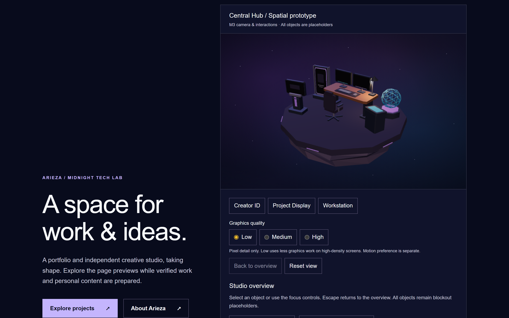
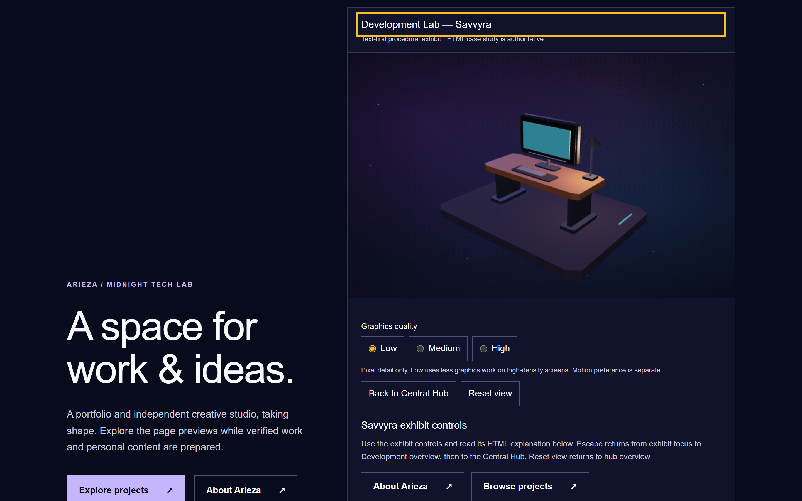
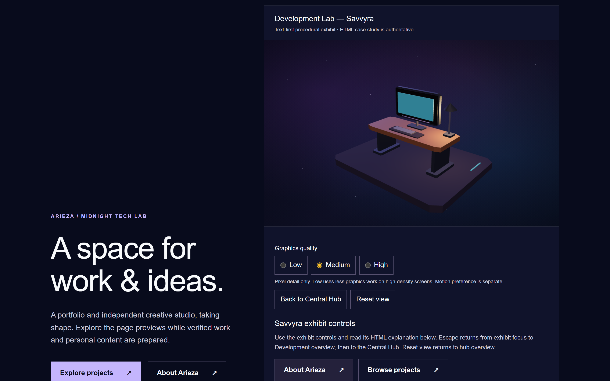
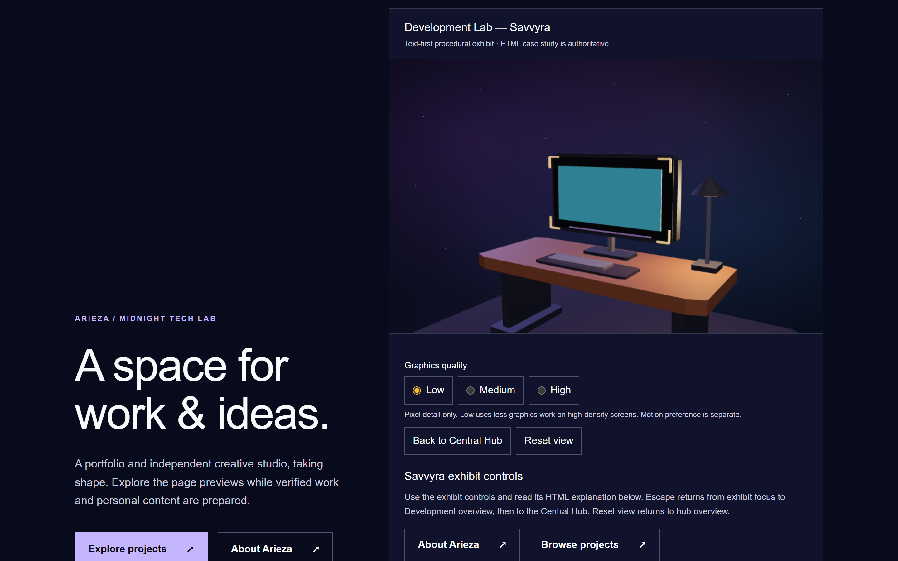

Original procedural marker only; no project imagery or imported artwork. Approved narrative remains HTML. One Canvas, original Hub and 440px panel retained. Baseline completed October 17; after capture follows resumed October 20 execution. Local Chromium results do not establish real-device GPU/FPS performance.
Startup median 960→942 ms; initial JS 399367→400160 bytes. Threshold 1152 ms; original F JS cap 405847 bytes.



